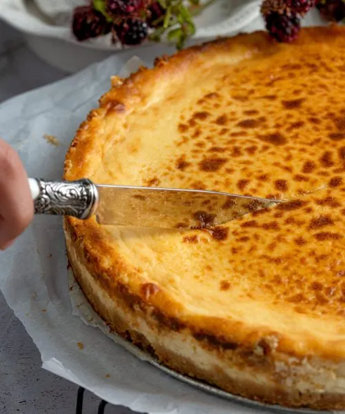

Tarta de Queso

Ingredientes:
- 200g de galletas
- 100g de mantequilla
- 500g de queso crema
- 200g de azúcar
- 3 huevos
- 200ml de nata para montar
Instrucciones:
- Tritura las galletas y mézclalas con la mantequilla derretida.
- Presiona la mezcla en el fondo de un molde para tartas.
- Bate el queso crema con el azúcar hasta obtener una mezcla suave.
- Añade los huevos uno a uno, mezclando bien después de cada adición.
- Incorpora la nata y mezcla hasta que esté todo bien integrado.
- Vierte la mezcla sobre la base de galletas y hornea a 160°C durante 50 minutos.
- Deja enfriar y refrigera antes de servir.
Comentario:
¡Esta tarta de queso es deliciosa y muy fácil de hacer! A mis amigos les encantó cuando la preparé para una reunión.